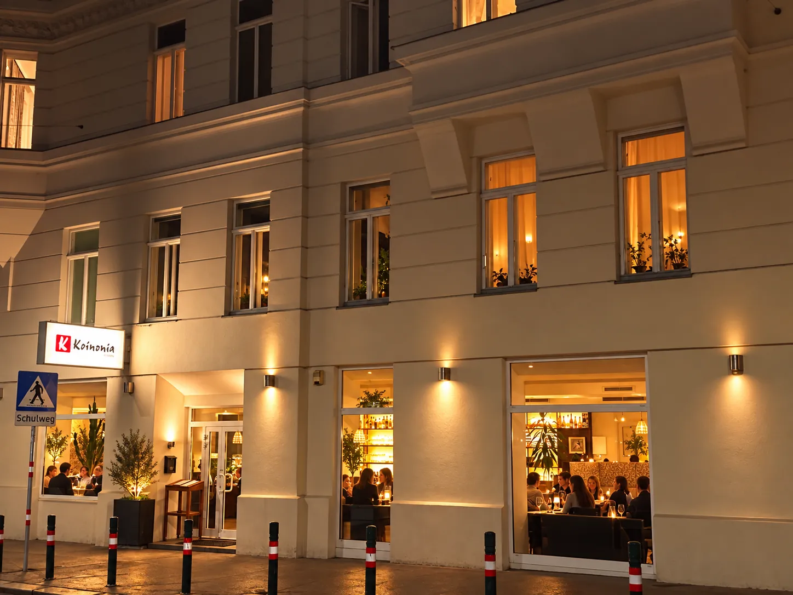
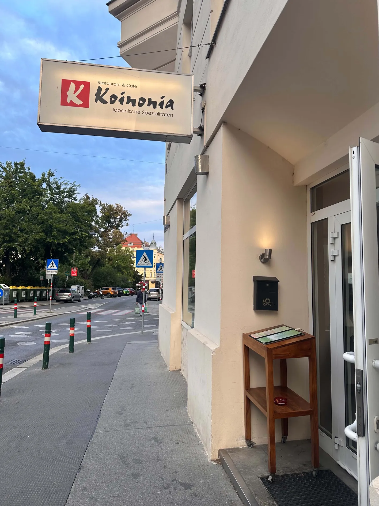
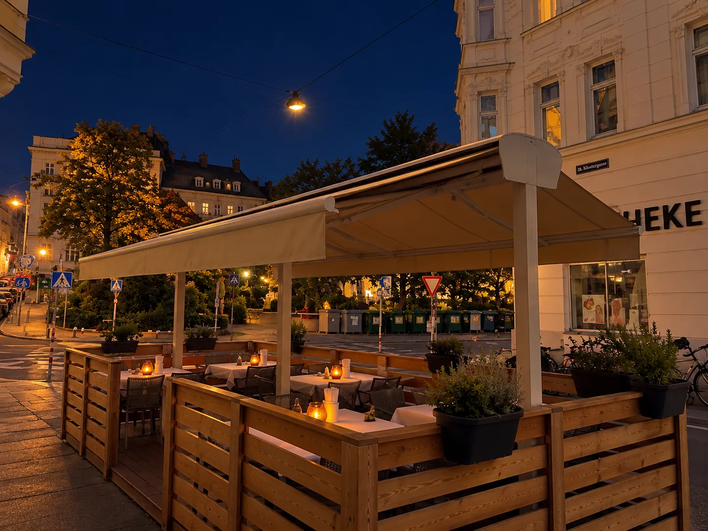

Wien Währing · Klostergasse 37
KoinoniaJapanische & Koreanische Spezialitäten
Sushi und Maki von der Bar, herzhafte koreanische Klassiker und thailändische Wok-Gerichte – frisch zubereitet, mitten im 18. Bezirk am Rand des Norbert-Liebermann-Parks.
Willkommen
Gastfreundschaft mit fernöstlicher Handschrift
Koinonia ist ein Restaurant und Café im 18. Wiener Gemeindebezirk – ein ruhiger Platz an der Ecke Währinger Straße und Klostergasse, direkt am Rand eines schönen Parks. Drinnen erwartet Sie ein gemütlich eingerichtetes Lokal mit offener Sushi-Bar, an der Nigiri, Tekka, California und Futo Maki vor Ihren Augen entstehen.
Neben der japanischen Küche steht auch die koreanische Küche im Mittelpunkt: herzhafte Klassiker wie Bulgogi sowie thailändische Gerichte und Suppen. Auch Tempura gehört zu unserem Angebot. Im Sommer sitzen Sie im begrünten Gastgarten, das ganze Jahr über bei uns im Lokal.
Wir freuen uns auf Ihren Besuch.
Ihr Koinonia Team

Unsere Küche
Vier Gründe vorbeizuschauen
Von der Sushi-Bar bis zum Mittagsteller – die ganze Karte finden Sie auf den folgenden Seiten.
Sushi & Maki
Nigiri, Tekka, California und Futo Maki – vor Ihren Augen an der Sushi-Bar zubereitet.
Zur Karte 02Koreanische Spezialitäten
Bulgogi und weitere Klassiker der koreanischen Küche, herzhaft und würzig.
Zur Karte 03Thailändische Gerichte
Currys und Wok-Gerichte mit frischen Kräutern – von mild bis feurig.
Zur Karte 04Mittagsmenü
Günstige Mittagsteller von Montag bis Freitag – ideal für die Mittagspause.
Zur KarteImpressionen
Ein Blick ins Lokal
Offene Sushi-Bar, koreanische Masken an der Wand und ein begrünter Gastgarten für warme Tage.






Gastgarten
Draußen sitzen, direkt am Park
Direkt vor dem Lokal, an der Ecke Klostergasse und Währinger Straße, liegt unser Gastgarten: überdachte Tische, Holzgeländer mit Pflanztrögen und der Blick hinüber in den Park.
An warmen Tagen schmecken Sushi, Bulgogi und ein Glas Wein im Freien gleich doppelt so gut.
Öffnungszeiten
- Montag – Sonntag11:30 – 15:00
- 17:30 – 22:30
Küche bis 22:00 Uhr
Kein RuhetagReservierung
Wir nehmen Ihre Reservierung gerne telefonisch entgegen.
Lieber zuhause
Koinonia zum Mitnehmen
Bestellen Sie Sushi, Maki und warme Gerichte bequem nach Hause – Lieferung über Lieferando.